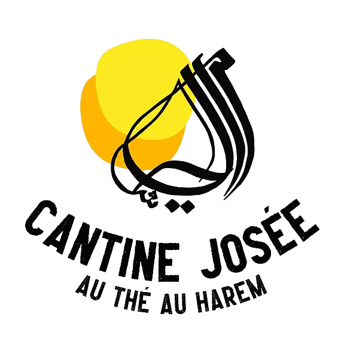
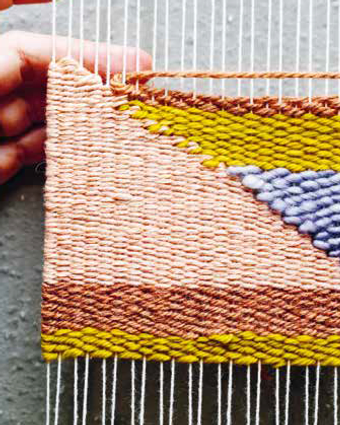
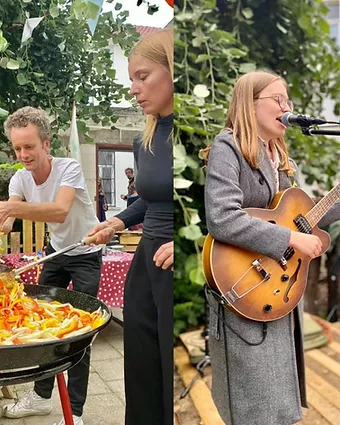
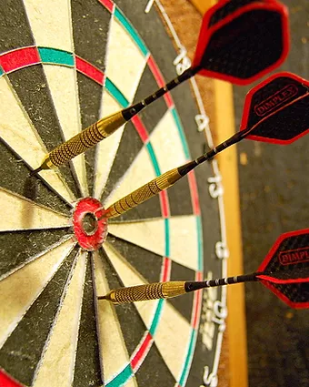

Camping
Josée
Brussels


Summer project
During the summer, Ten Noey resolutely goes outside, on the street, on squares and in parks. we save neither effort nor time (but are careful with our money) to set up a summer operation on the one hand revealing the wealth of Sint-Joost-ten-Node.
More info

Cantine Josée
Josée is enjoying herself so much in Sint-Joost that she now also has a winter version of her campsite opens: Cantine Josée, an open meeting place where everything is possible and little is required, a place for open activities, but also a hangout, a place where everyone can just be and sit, without further ado.
More info
WEDNESDAYS
On Wednesdays, children and families are central. We watch, play, tinker and discover.

THURSDAYS
Thursdays become make days. Weaving, hands in the clay, sewing, drawing. In the evening we will have a debate about themes that concern us.

FRIDAYs
On Friday you will be at the pots yourself. We serve folk cuisine and in the evening we fill it stage, with music, word etc.

SATURDAYS
Saturdays are all about stories, reading and listening, for young and old.

SUNDAYS
On Sundays we go for fun, with games and a piece of cake.